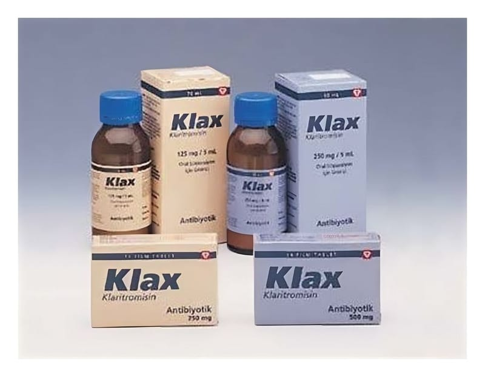

Klax 500 mg Film Kaplı Tablet, 14 Adet

Ne için kullanılır
KT · Bölüm 1KLAX film kaplı tabletler, oblong şeklinde, sarı renkli tabletlerdir. Bir kutuda 14 tablet bulunan ambalaj şeklinde satışa sunulmuştur.
Her bir KLAX film kaplı tablet, 500 mg klaritromisin içerir.
KLAX (klaritromisin) makrolid adı verilen bir gruba ait bir antibiyotiktir. Antibiyotikler enfeksiyonlara neden olan bakterilerin çoğalmasını durdurur.
KLAX yetişkinlerde ve 12 yaşından büyük çocuklarda çeşitli mikroorganizmaların neden olduğu şu enfeksiyon hastalıklarının tedavisinde kullanılmak içindir: • Farenjit (yutak iltihabı), tonsillit (bademcik iltihabı), sinüzit (sinus iltihabı) gibi üst solunum yolu enfeksiyonları, • Akut ve kronik bronşit, pnömoni (zatürre) gibi alt solunum yolu enfeksiyonları,
• Duyarlı mikroorganizmaların neden olduğu komplike olmayan, çeşitli deri ve yumuşak doku enfeksiyonları.
KLAX ayrıca aşağıdaki tablolarda da kullanılmaktadır:
• Bazı AIDS (edinilmiş immün yetmezlik sendromu) hastalarındaki, bir mikobakteri türüne (mikobakterium avium kompleksi) bağlı enfeksiyondan korunma amacıyla, • On iki parmak barsağı ülseri nüksünün azaltılması için, H. Pylori adındaki bakterinin yok edilmesi (eradikasyonu) amacıyla.